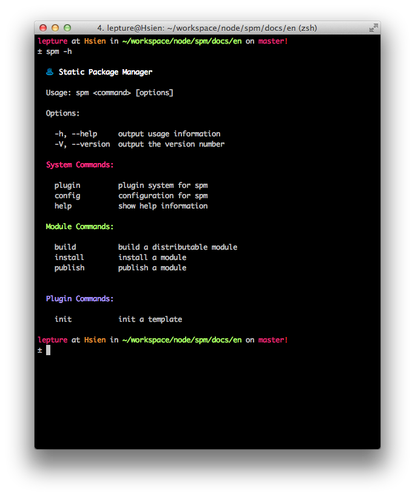

spm is built on nodejs, which means you have to install nodejs yourself. I believe you have done this part, but I'd like to repeat myself.
There are several ways to install nodejs. The easiest way is through a package manager like apt-get on debian-like linux distribution, or homebrew on mac. However node in such package managers may be too old.
Get the node binaries on the offical download webpage.
Suggestions for Linux:
grab the Linux Binaries, extract it to your home directory, for example:
~/dist/nodeadd
~/dist/node/bintoPATHin your bashrc or zshrc:export PATH="$PATH:$HOME/dist/node/bin"
Putting node in your home directory or some place need no sudo privellege makes things simple. You don't have to sudo npm install <package> anymore.
Suggestions for Mac:
- just like Linux, you can do the same thing.
- homebrew is another good choice.
Suggestions for Windows:
- do whatever you want, I don't think there is another choice.
Installation
Install spm is simple with npm:
$ npm install spm -g
Please install it with -g option, otherwise you can't use it in command line.
If you want to try the latest version of spm, try the ninja channel:
$ npm install spm@ninja -g
You can also grab the code from github and install from the source code.
Try with spm now:
$ spm
If you haven't set NODE_PATH, it will prompt an information like:
Please set environment variable NODE_PATH in ~/.zshrc:
export NODE_PATH=/usr/local/share/npm/lib/node_modules
Commands
spm comes with some built-in commands, and it can be extended by plugins. Show the help screen with:
$ spm -h
or:
$ spm help

You can get more help information of a sub-command by:
$ spm build -h
or:
$ spm help build
Want to write your own plugin? Checkout the plugin section.
Build
Build is a transport process, it is not a code to binary process.
For example, we have a package hello:
package.json
src/
hello.js
The source code of hello.js is as simple as:
define(function(require, exports, module) {
exports.name = 'hello'
exports.jquery = require('jquery')
})
The package.json (more information on package section) is as simple as:
{
"family": "lepture",
"name": "hello",
"version": "1.0.0",
"description": "hello spm",
"spm": {
"alias": {
"jquery": "jquery/jquery/1.7.2/jquery"
},
"output": {
"hello.js": ["hello.js"]
}
}
}
Install the requirements and build the package:
$ spm install $ spm build
After spm build, it should be:
define('lepture/hello/1.0.0/hello', ['jquery/jquery/1.7.2/jquery'], function(require) {
exports.name = 'hello'
exports.jquery = require('jquery/jquery/1.7.2/jquery')
})
The package structure will be:
package.json
src/
hello.js
dist/
hello.js
hello-debug.js
Get more information on build.
Install
You have used spm install in the build process, learn more about install with:
$ spm help install
There is also an online manual for you spm install.
Publish & Unpublish
We need your contribution, publishing a package helps a lot.
Register an account at spmjs.org. Replace family in package.json with your account name (lepture is my account name).
And now you can publish your package with:
$ spm publish
Get more help on publish:
$ spm help publish
- You can also read our online manual spm publish.
- Find more information on package.
Info & Search
You can't miss it, let's try:
$ spm help info $ spm help search
Config
The configuration file is located at ~/.spm/spmrc. It is in ini format:
[user]
username = lepture
[source:private]
url = http://source.your-company.com
More information can be found at config section.